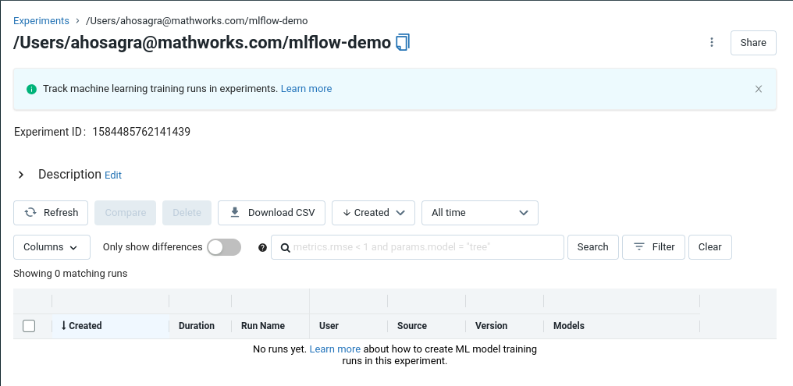
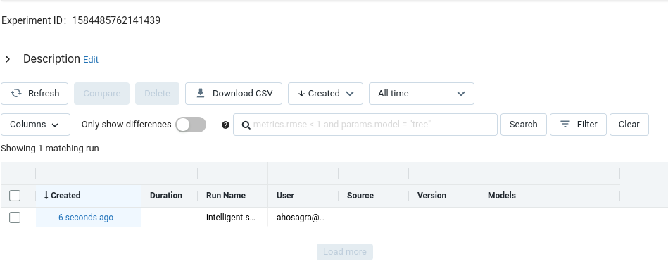
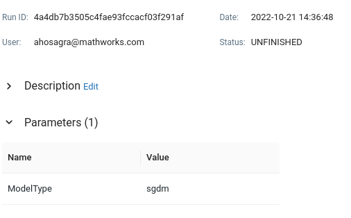
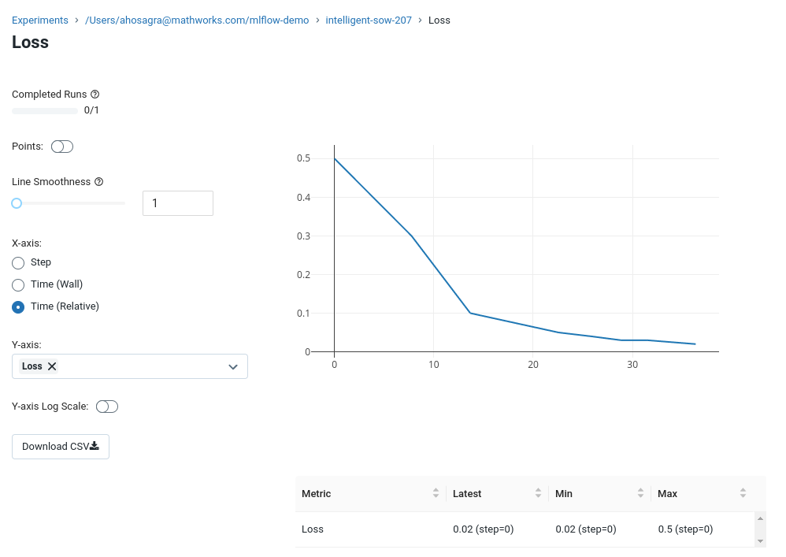

Quick Start
Installation
If the package is installed as part of a larger parent package e.g. The MATLAB interface for Databricks any further installation steps that may be required will be documented as part of the parent package’s installation process.
Otherwise if the package is to be used in a standalone capacity extract the package
into an empty directory. Run the Software\MATLAB\startup.m function to begin
using the package.
Authentication
See the Authentication page for more details on how to configure MLFlow to work with your server. If used as part of a parent package see also the respective package’s authentication documentation.
Create a new experiment
Create a new experiment using:
mle = mlflow.Experiment;
mle.name = '/Users/ahosagra@mathworks.com/mlflow-demo';
mle.create();
Connect to an existing experiment
Connect to an existing experiment using:
mle = mlflow.Experiment.getByName('/Users/ahosagra@mathworks.com/mlflow-demo')
This returns an mlflow.Experiment object:
mle =
Experiment with properties:
experiment_id: "1584485762141439"
name: "/Users/ahosagra@mathworks.com/mlflow-demo"
artifact_location: "dbfs:/databricks/mlflow-tracking/1584485762141439"
lifecycle_stage: "active"
last_update_time: 1666387710645
creation_time: 1666387710645
tags: [1×5 mlflow.ExperimentTag]

Create a new run for the experiment
Create a new run Object from the experiment using:
r1 = mle.createRun();
This returns an mlflow.Run object:
r1 =
Run with properties:
info: [1×1 mlflow.RunInfo]
data: [1×1 mlflow.RunData]
run_id: [0×0 string]
user_id: [0×0 string]
experiment_id: "1584485762141439"
start_time: []
lifecycle_stage: [0×0 string]
Running the create() method on this object will create the run on MLFlow
r1.create();

This run handle can be used for subsequent actions on the run.
Log a parameter
To log a parameter for the existing run:
r1.logParameter('ModelType','sgdm');

Log a metric
To log a metric for the existing run:
r1.logMetric('Loss',0.5)
r1.logMetric('Loss',0.3)
r1.logMetric('Loss',0.1)

Conclusion
These API calls can be hooked into the Setup and Metrics functions from apps like the experiment manager or from the users scripts.
For more details please checkout the API.